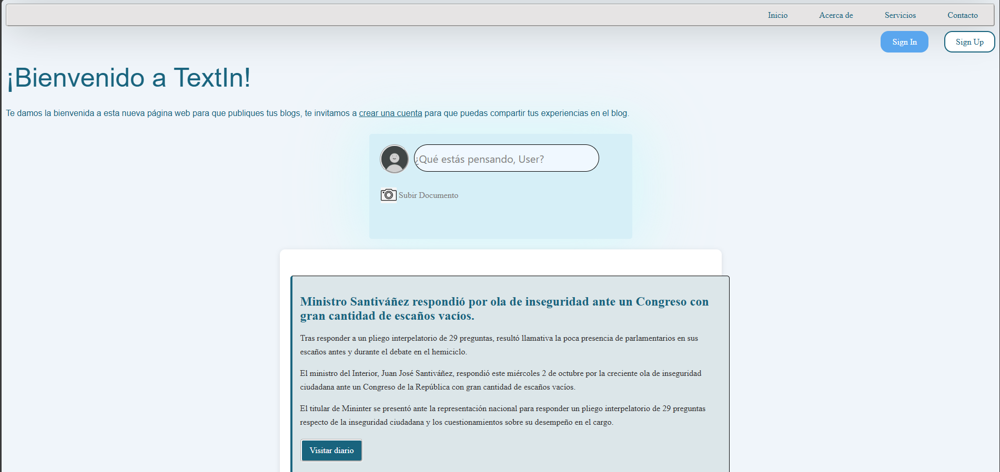
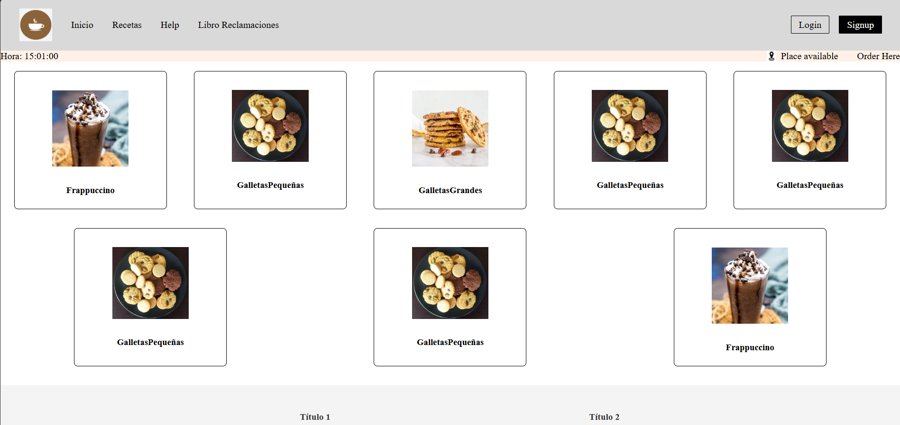

Projects
TextIn
El proyecto se trata basicamente de una replica de facebook donde se maneja en gran escala CSS y JavaScript. Además se utilizó una API para el manejo de una base de datos en tiempo real y que usuarios puedan agregar publicaciones y comentarios de forma anónima.
RutaCookiesStore
Un proyecto inspirado en la página web de StarBucks en la que se uso JavaScript para realizar la division entre productos que se muestran, dado a que la cantidad de productos a mostrar es 8 por defecto, este se puede modificar para poner la cantidad deseada, sea cual sea la cantidad la página solo mostrara hasta 5 productos por fila.
RutaAbout me
Me llamo Fabrizio, soy un joven de 18 años, me encuentro cursando la carrera de Ingeniería de Sistemas de Información en la Universidad Peruana de Ciencias Aplicadas (UPC) en su sede San Miguel. Tengo un manejo del Inglés a nivel Intermedio, escrito y hablado, además de un maneja de tecnologías importantes para desarrollo web. En la universidad he aprendido fundamentos básicos de la programación y de cómo levantar una página web. Tuve buen desempeño en proyectos que trabaje en equipo en mis cursos de la universidad, desarrolle nuevas habilidades de socialización gracias a ellos, mucho antes era introvertido y tenia miedo a hacer nuevos amigos.
Contact
Tecnologias